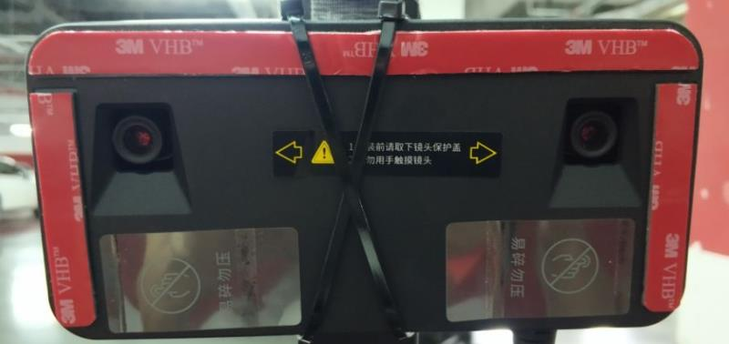
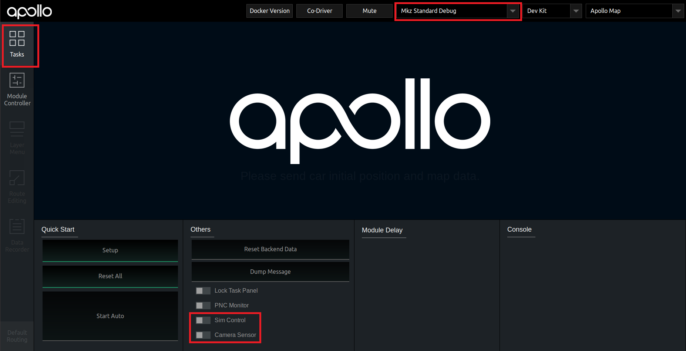

基于双目感知的封闭园区自动驾驶搭建–设备集成
前提条件
完成了循迹搭建–车辆循迹演示
主要步骤
摄像头安装配置与数据验证。
摄像头型号说明
摄像头型号：smartereye S1双目相机。
smartereye S1双目相机采用标准RJ45的网络接口，由北京中科慧眼科技有限公司制造。
更多详细参数可参考中科慧眼官网：Smartereye S1。
摄像头安装配置与数据验证
牢固安装在小车结构架的竖杆上，水平安装，镜头保持清洁，避免影响图像采集。安装后的效果如下图所示：

摄像头与工控机连接
用车上的电源给相机供电。
用网线将设备连接在IPC的网络接口上。
向双目相机的供应厂询问设备的IP地址，例如设备的IP地址为192.168.1.251；在IPC的终端中ping 192.168.1.251，能ping通则表示相机和IPC之间的网络是通的。
参考双目相机的官网文档对相机做一下相关的配置：Smartereye S1。
摄像头的启动
运行
git clone https://github.com/ApolloAuto/apollo-contrib.git命令将apollo-contrib仓库克隆至本地，然后将apollo-contrib文件夹下面的smartereye文件夹整体拷贝到/apollo目录下。启动docker环境，在docker环境中输入以下命令：
sudo bash /apollo/smartereye/install.sh /apollo/third_party/camera_library/smartereye
将smartereye的共享库拷贝至apollo的对应的位置。删除/apollo/smartereye文件夹。
将
/apollo/modules/dreamview/conf/hmi_modes/mkz_standard_debug.pb.txt文件中的第四行的内容dag_files: "/apollo/modules/drivers/camera/dag/camera.dag"修改为dag_files: "/apollo/modules/drivers/smartereye/dag/smartereye.dag"并保存；将/apollo/modules/common/data/global_flagfile.txt文件中的末尾添加下面一行：--image_short_topic=/apollo/sensor/smartereye/image/compressed并保存。确保apollo被正确编译。
启动DreamView：
bash /apollo/scripts/bootstrap.sh，并在浏览器中输入DreamView地址：http://localhost:8888/在
Module Controller标签栏下，打开Camera开关，开关位置如下图所示：

在
Tasks标签栏下依次打开SimControl和Camera Sensor开关，Camera Sensor打开后，务必关闭SimControl。选择Mkz Standard Debug模式，开关在dreamview界面的位置如下图所示：

如果一切正常，则会在
DreamView右下角出现摄像头采集的图像。在正确完成上述步骤后，在
docker环境内使用cyber_monitor工具，查看/apollo/sensor/smartereye/image、/apollo/sensor/smartereye/image/compressed是否有数据输出，且帧率是否稳定在15帧左右。
//输入如下命令启动cyber_monitor
budaoshi@in_dev_docker:/apollo$ cyber_monitor